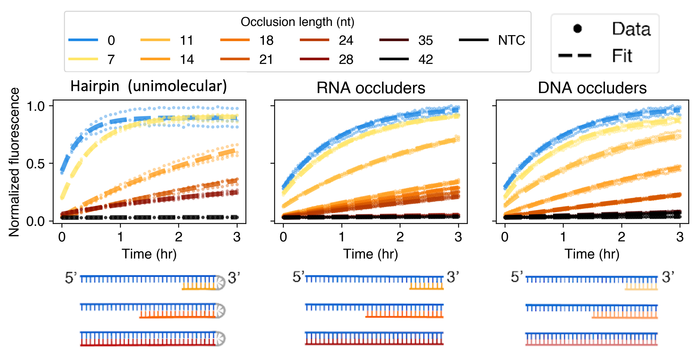

Using RNA structure to understand and improve Cas13
Cas13 is a CRISPR enzyme that targets RNA. Like its better-known cousin Cas9, Cas13 relies on a guide RNA (in this case called a crRNA). The crRNA has two parts: 1) a region that binds to Cas13; 2) a variable region called the protospacer, which confers specificity to Cas13. Cas13 gets activated when this crRNA binds to a single stranded RNA molecule with a sequence complementary to the protospacer (the “target” RNA). When the crRNA-Cas13 complex binds a target RNA, the Cas13 enzyme gets “activated”, and this activation can be visualized by fluorescence.
Today, Cas13 is commonly used for viral diagnostics. Given a patient sample (e.g. saliva), you might want to ask whether the sample contains a certain RNA virus, such as SARS-CoV-2 or the new H5N1 avian flu. To test this, you can add Cas13 to the sample along with a crRNA complementary to the RNA virus of interest, and if Cas13 gets activated, you know the patient sample contains this RNA virus. This is a much less expensive method to perform viral diagnostics than e.g. sequencing the sample, which is the gold standard in terms of accuracy but is highly expensive and time-consuming. However, because Cas13 was only discovered so recently, there is still a lot we don’t understand about the enzyme, and a lot we can improve on.
Previous work has shown that Cas13 can’t get activated when the target RNA is double-stranded (i.e. highly structured). However, natural RNA molecules generally have at least some structure. We wanted to understand how RNA structure affects Cas13, and how Cas13 can overcome this effect (to whatever extent it can) to target structured RNA.
We started by designing a target with little internal structure, and showing that adding structure to it leads to lower Cas13 activity (Fig. 1A-B). We tried three methods of adding structure, which all gave the same results. Because of this, we used the simplest method (adding external short DNA molecules to create structure) for the rest of the paper. We then tried to quantitatively understand the effect we saw, and found that although it couldn’t be understood as an equilibrium effect, it could be predicted by a kinetic model based on a phenomenon called “strand displacement”, which is a method used primarily in the DNA nanotechnology field (Fig. 1C-D).
We extended our results by devising a method to run thousands of these experiments in parallel (“multiplexing”), varying the amount and position of RNA structure for 8 different Cas13 targets (Fig. 2A-B). We found that the effect of RNA structure on Cas13 was independent of sequence, and that RNA structure at two different positions affects Cas13 activity in two different ways (Fig. 2C, F). We also found that our strand displacement model can quantitatively explain this effect (Fig. 2D-E).
We then used this new understanding of how RNA structure affects Cas13 to improve Cas13-based diagnostics. Current instantiations of Cas13 have a major challenge, which is that Cas13 can get highly activated by targets that aren’t a perfect match to the crRNA. Therefore, it’s sometimes difficult to know which particular strain of an RNA virus is present in a given patient sample. We showed that by creating structure in the crRNA using a short DNA oligo, and therefore forcing Cas13 to undergo a strand displacement reaction in order to get activated, we can improve the specificity of Cas13 by an enormous amount (Figs. 3-4). Our new methodology enables single-nucleotide resolution of Cas13 activity in synthetic RNA as well as in patient samples. This method appears to be incredibly generic and robust, and we’ve tried it on ~100 different sequences so far. Thus, by answering a basic biological question (“how is Cas13 affected by RNA structure?”) we were able to discover behavior that we then used to make enormous improvements to Cas13-based diagnostics.